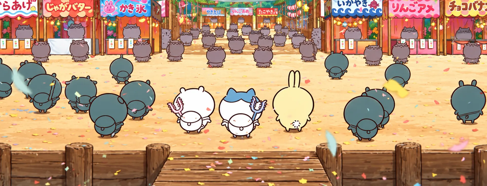
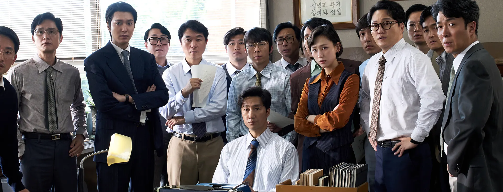

October 2026
2026년 10월호 전체 기사 아카이브

SPECIAL ② 2026.10.19
진실 기록 넘어 사회 변화로
한국형 ‘임팩트 다큐’ 생태계, 필요하다 — 기록을 넘어 사회적 파급을 만드는 다큐멘터리의 조건.

SPECIAL ① 2026.10.06
새로운 영화·영상 제작 거점으로의 출발
부산기장촬영소를 가다

INTERVIEW ② 2026.10.19
엉뚱하지만 파괴적인
〈부활남: 더 레드〉 정성호 무술감독

INTERVIEW ① 2026.10.06
인간다움과 인간다운 죽음에 대하여
〈구제역에서 살아 돌아온 돼지〉 故 허범욱 감독

CRITIC ② · YES or NO 2026.10.19
낙원 없이 살아가는 법
〈실낙원〉 찬반 비평 대담

CRITIC ① 2026.10.06
미옥과 호석의 내일을 위한 시간
〈가능한 사랑〉 이창동 감독 신작 비평

GLOBAL 2026.10.19
도시 전체와 호흡하는 축제로
커뮤니티비프와 동네방네비프

GLOBAL ENG 2026.10.19
A Festival in Step with an Entire City
Community BIFF and BIFF Everywhere

KOFIC STORY 2026.10.19
창작자, 어떤 판 위에서 놀게 할 것인가
2026 KOFIC AI 쇼케이스

BOX OFFICE 2026.11.03
10월 5주차 위클리 박스오피스
〈극장판 치이카와〉 1위 수성, 신작 가세한 주간 극장가 동향

BOX OFFICE 2026.10.27
10월 4주차 위클리 박스오피스
10월 4주차 흥행 TOP 10 및 한국영화 관객 점유율 리포트
BOX OFFICE 2026.10.20
10월 3주차 위클리 박스오피스
10월 3주차 흥행 TOP 10 및 한국영화 관객 점유율 리포트

BOX OFFICE 2026.10.13
10월 2주차 위클리 박스오피스
10월 2주차 흥행 TOP 10 및 한국영화 관객 점유율 리포트
BOX OFFICE 2026.10.07
10월 1주차 위클리 박스오피스
10월 1주차 흥행 TOP 10 및 한국영화 관객 점유율 리포트

PRODUCTION 2026.10.13
9월 개봉작 살펴보기
2026. 9. 한국영화 제작상황판 (23편 총정리)